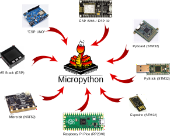
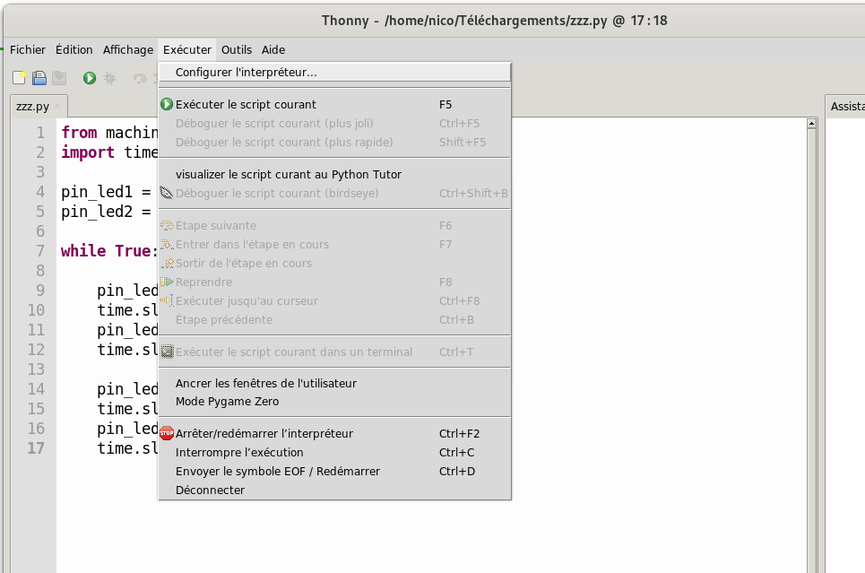
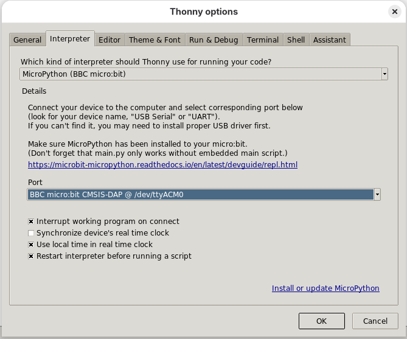
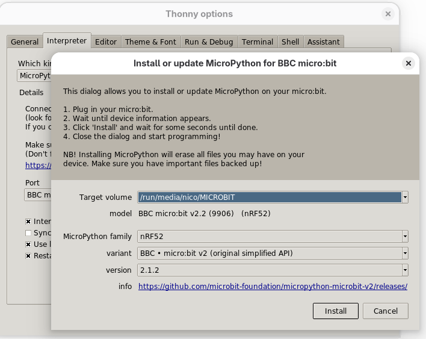
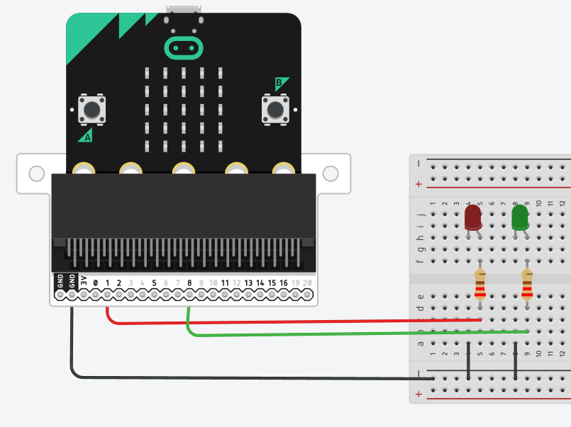
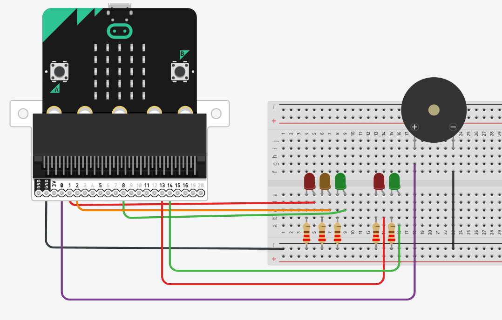

Utilisation de MicroPython et Microbit

Pour comprendre : principe général de l'utilisation de MicroPython
Le principe général est le suivant :
- on connecte la carte avec Micropython sur le port USB : un port série lui est attribué : /dev/ttyACM0 par exemple sous Gnu/Linux
- avec un interpréteur comme Thonny, on peut envoyer le code dans la carte.
Préparer le matériel pour MicroPython
Les cartes Arduino, les cartes type ESP32/ESP8266 ou les cartes Micro:bit, ont un firmware (mini-OS) permettant de charger du code.
Nous devons modifier ce firmware pour fonctionner en MicroPython.
Nous allons flasher le firmware MicroPython avec Thonny IDE.
La méthode la plus simple pour installer et utiliser MicroPython sur Micro:bit (et autre microcontrôleur) est d’utiliser le logiciel Thonny IDE. En effet vous pouvez installer le firmware à partir de l’interface du logiciel et l’utiliser pour développer votre code et le téléverser sur la carte.
Dans le logiciel, Thonny IDE, sélectionner le Menu : Exécuter puis Configurer l'interpréteur...

Cliquer sur Installer ou mettre à jour MicroPython

Sélectionner le bon port. Pour une carte Carte Micro:bit :
- MicroPython family : nRF52
- Variant : BBC - micro:bit v2
Puis installer, le firmware va se charger dans la carte.

Téléverser un programme
Dans le logiciel, Thony IDE, sélectionner le Menu : Exécuter puis Configurer l'interpréteur...
Choisir le bon port (exemple : /dev/ttyUSB0 ou /dev/ttyACM0 )
Programme test
# Microbit Test Program
# Import required modules, including the new pins for pedestrian lights.
from microbit import sleep, running_time, pin1, pin8
# --- Pin Assignments ---
RED_LED = pin1
GREEN_LED = pin8
# --- Configuration ---
RED_TIME_MS = 6000 # 6 seconds
GREEN_TIME_MS = 7000 # 7 seconds
# --- Helper Functions ---
def all_lights_off():
"""Ensures all pins are turned off."""
RED_LED.write_digital(0)
GREEN_LED.write_digital(0)
# Initialize by ensuring all lights and the buzzer are off
all_lights_off()
# Main traffic light loop
while True:
all_lights_off()
RED_LED.write_digital(1) # Red ON
sleep(RED_TIME_MS) # Brief warning
all_lights_off()
GREEN_LED.write_digital(1) # Green ON
sleep(GREEN_TIME_MS)
# Loop back to
Réaliser ce montage :

Programme Trafic Light
# Microbit Traffic Light Simulator with Pedestrian Buzzer (External LED Pins)
#
# This program simulates a four-state traffic light cycle using external
# components connected via the micro:bit edge connector.
#
# Hardware Setup Summary:
# - Vehicle Red LED: **Pin 1 (P1)**
# - Vehicle Amber LED: **Pin 2 (P2)**
# - Vehicle Green LED: **Pin 8 (P8)**
# - Pedestrian Red LED (STOP): **Pin 12 (P12)**
# - Pedestrian Green LED (WALK): **Pin 13 (P13)**
# - Passive Buzzer/Speaker: **Pin 0 (P0)** (Buzzes only during P-WALK)
# Import required modules, including the new pins for pedestrian lights.
from microbit import sleep, running_time, pin0, pin1, pin2, pin8, pin13, pin14
# --- Pin Assignments ---
# Vehicle Lights
RED_LED = pin1
AMBER_LED = pin2
GREEN_LED = pin8
# Pedestrian Lights
P_RED_LED = pin13
P_GREEN_LED = pin14
# Buzzer
BUZZER = pin0
# --- Configuration ---
RED_TIME_MS = 6000 # 6 seconds (Pedestrian crossing time)
RED_AMBER_TIME_MS = 1000 # 1 second (Warning before Green)
GREEN_TIME_MS = 7000 # 7 seconds (Vehicle go time)
AMBER_TIME_MS = 2000 # 2 seconds (Warning before Red)
# Buzzer settings for the "Walk" signal
BUZZ_DURATION = 200 # 200 ms per beep (time buzzer is ON)
BUZZ_PAUSE = 300 # 300 ms pause between beeps (time buzzer is OFF)
# --- Helper Functions ---
def all_lights_off():
"""Ensures all vehicle and pedestrian traffic light pins are turned off."""
RED_LED.write_digital(0)
AMBER_LED.write_digital(0)
GREEN_LED.write_digital(0)
P_RED_LED.write_digital(0)
P_GREEN_LED.write_digital(0)
def buzz_walk_signal(duration_ms):
"""Generates an intermittent buzz signal using Pin 0 for the pedestrian crossing phase."""
end_time = running_time() + duration_ms
while running_time() < end_time:
# Simple Buzz ON: Set Pin 0 to high (3.3V)
BUZZER.write_digital(1)
sleep(BUZZ_DURATION)
# Simple Buzz OFF: Set Pin 0 to low (0V)
BUZZER.write_digital(0)
# Pause briefly
sleep(BUZZ_PAUSE)
# Initialize by ensuring all lights and the buzzer are off
all_lights_off()
BUZZER.write_digital(0)
# Main traffic light loop
while True:
# ----------------------------------------------------------------------
# 1. VEHICLE RED (Stop) & PEDESTRIAN GREEN (Walk) + BUZZING
# ----------------------------------------------------------------------
all_lights_off()
RED_LED.write_digital(1) # Vehicle Red ON
P_GREEN_LED.write_digital(1) # Pedestrian Green ON (WALK)
# Start the buzzer signal for blind people
buzz_walk_signal(RED_TIME_MS)
# Stop the buzzer and wait briefly
BUZZER.write_digital(0)
sleep(100) # Short pause
# ----------------------------------------------------------------------
# 2. VEHICLE RED + AMBER (Prepare Go) & PEDESTRIAN RED (Stop)
# ----------------------------------------------------------------------
# Turn OFF Pedestrian Green, Turn ON Pedestrian Red
P_GREEN_LED.write_digital(0)
P_RED_LED.write_digital(1) # Pedestrian Red ON (STOP)
# Vehicle Red stays ON, Amber turns ON
AMBER_LED.write_digital(1)
sleep(RED_AMBER_TIME_MS) # Brief warning
# ----------------------------------------------------------------------
# 3. VEHICLE GREEN (Go) & PEDESTRIAN RED (Stop)
# ----------------------------------------------------------------------
all_lights_off()
GREEN_LED.write_digital(1) # Vehicle Green ON
P_RED_LED.write_digital(1) # Pedestrian Red stays ON
sleep(GREEN_TIME_MS)
# ----------------------------------------------------------------------
# 4. VEHICLE AMBER (Prepare Stop) & PEDESTRIAN RED (Stop)
# ----------------------------------------------------------------------
all_lights_off()
AMBER_LED.write_digital(1) # Vehicle Amber ON
P_RED_LED.write_digital(1) # Pedestrian Red stays ON
sleep(AMBER_TIME_MS)
# Loop back to Vehicle Red / Pedestrian Green (WALK)
Réaliser ce montage :

Remettre le matériel pour Micro:bit "web"
Télécharger le fichier .hex
Meet the microbit.hex
Step 1: Connect your BBC micro:bit to your computer

Connect the small end of the USB cable to the micro USB port on your BBC micro:bit
Connect the other end of the USB cable to a USB port on your computer.
On computers running Windows, MICROBIT appears as a drive under Devices and drives.
On Linux MICROBIT will be mounted as a drive eg at /media/pi/MICROBIT
Copier le fichier .hex sur la carte.